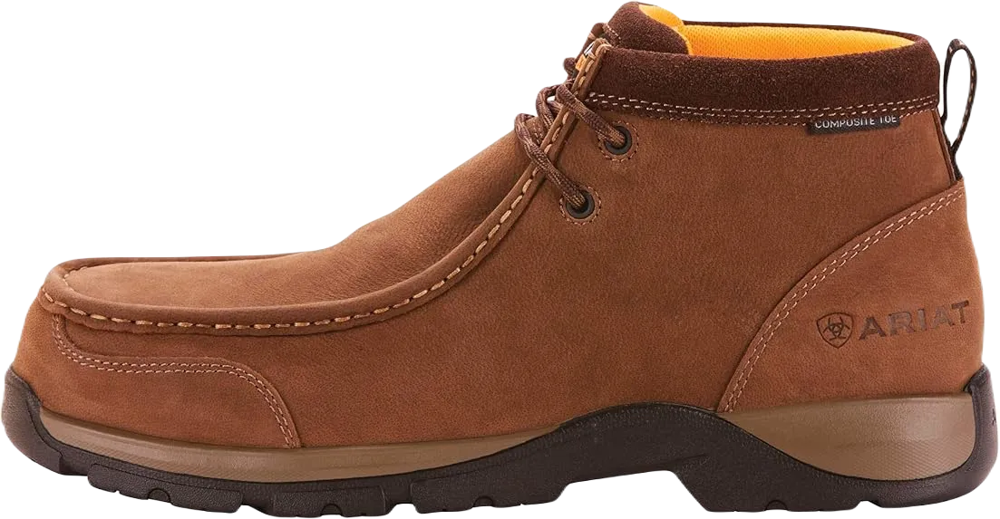
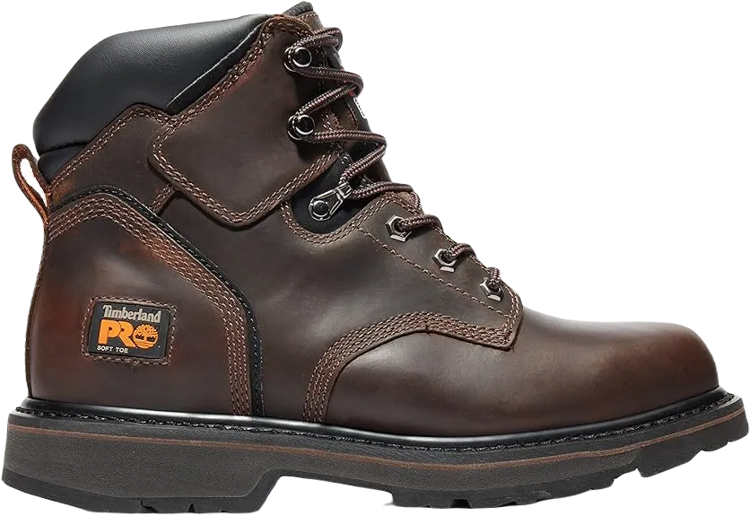
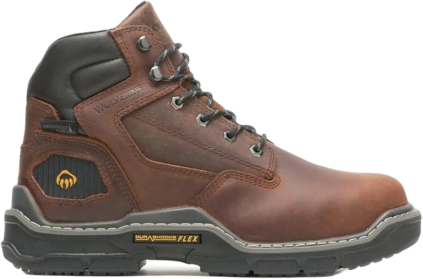
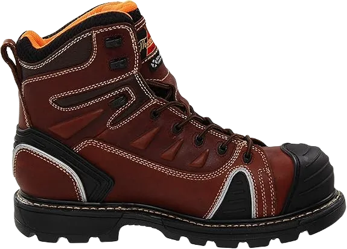
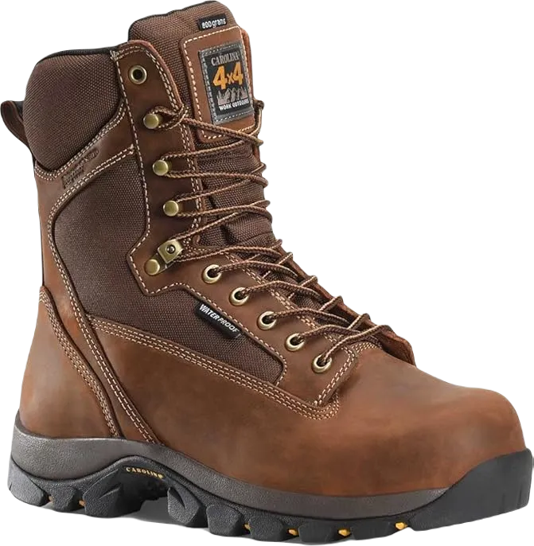
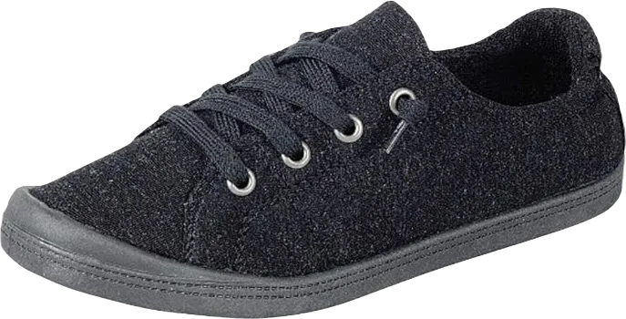

Top 15 Best Work Boots for Diesel Mechanics in 2024
Best Work Boots for Diesel Mechanics: I initially purchased these Wolverine boots several months ago. They came in a really cool box. After getting them, I tried them on right away. They felt great and protective, thanks to their exceptional safety features.
These boots are fantastic for mechanics because they possess numerous features that all work boots for this profession should have. They are not only highly protective against various hazards but also offer remarkable comfort features.
-
#1
Timberland seasoned guys’s Mudsill
.webp)
Wooded area work boots are known for their protective features that are hard to surpass. Specifically for mechanics, they shield the feet from accidents associated with the nature of this profession. They possess several qualities:
Overall, are they comfortable? Absolutely! These boots are designed with a style similar to that of a sneaker, providing exceptional comfort. In addition to this, they include the following features:
These boots excel in delivering both protection and comfort. They stand out as some of the best work boots for mechanics, truly remarkable in comparison to others. -
#2
Justin proper paintings Boots
These handcrafted work boots, made in the United States by Justin, are among the top-tier work boots for mechanics. They are specifically designed for harsh and hazardous conditions, much like those found in a mechanic’s workspace. Here are some of their standout features:
I purchased these work boots for my long 10-hour shifts, which can be tough on my feet. However, wearing these boots made a noticeable difference; my feet felt incredibly comfortable throughout the day. Just take a look at the comfort features they offer—they're outstanding:
Overall, I am extremely satisfied with these boots. The combination of safety and comfort is exceptional. I would highly recommend them to anyone who works long hours in challenging and potentially dangerous environments. -
#3
Wolverine Buccaneer Multishox
.webp)
It has been three years since I purchased those Wolverine boots, and I’m still in love with their protective features. They have water-resistant leather that shields my toes from any liquids, and the rugged design gives me a sense of security in any situation.
From daily tasks to mechanic-related work, these boots provide exceptional foot support, making them an excellent choice. Comfort is another area where these boots excel, offering a fantastic combination of agreeable features.
Ultimately, these remarkable boots are designed to provide you with unparalleled comfort and support, making them possibly the best option if you’re looking for high-quality work boots for mechanics. -
#4
Timberland pro men’s Pit boss
Forest Region is a fantastic emblem known for creating exceptional work boots. With a rich history of producing high-quality footwear for both professional and everyday tasks, this model stands out due to its wide range of impressive features. In fact, there are so many options that it might be hard to believe!
Timberland's entire Pro line is built around the goal of delivering superior safety and durability. This commitment to quality is evident in every product they offer, ensuring that each boot is designed with both performance and protection in mind.
I believe these Timberland work boots are among the best for mechanics because they provide both comfort and safety, surpassing what many other brands offer in the work boot market. -
#5
Caterpillar men’s second Shift ST
.webp)
These Caterpillar work boots are the ideal combination of style and functionality, designed to handle various tasks while providing unmatched protection and comfort. They excel in making even the toughest work environments feel more manageable, ensuring your feet stay safe and comfortable throughout the day.
Despite their rugged appearance and classic design, you might assume these boots lack comfort features, but that's far from the truth. After extensive research and personal experience, I can confidently say that these boots are exceptional.
Caterpillar has crafted an outstanding pair of work boots that seamlessly combines safety, durability, and comfort. They truly offer a remarkable option for anyone in need of reliable footwear in demanding work conditions. -
#6
Wolverine guys’s Raider
Wolverine work boots seamlessly blend exceptional functionality with style. Their robust and durable construction, coupled with an innovative sole design, makes them a favorite among mechanics. The attention to detail in the soles enhances grip and stability, making these boots an ideal choice for those working in demanding environments.
These boots are designed to combat sweat and moisture buildup throughout the day. Featuring a 100% leather upper and a ventilated, breathable lining, they ensure your feet remain comfortable and free from blisters, even during long hours of wear.
Additionally, the leather upper is water-resistant, providing protection for your feet against light splashes. Another notable feature is the 5.5-inch shaft, which offers ample support without compromising mobility, making these boots a smart investment for any mechanic. -
#7
Skechers guys’s Felton
.webp)
The protective double stitching of 100% synthetic material provides exceptional durability to the upper while maintaining the essential flexibility expected in any work boot. This balance between strength and adaptability ensures comfort and performance on the job.
The outsole features a substance known as Nitrile, which offers superior slip resistance compared to traditional rubber. This innovative material provides excellent traction on various surfaces, whether you're walking on water, oil, or chemicals, ensuring stability and safety.
Moreover, the outsole meets the EH ASTM F2413-11 standard, confirming its ability to withstand electrical hazards. This certification adds an extra layer of protection, making these boots a reliable choice for those working in potentially dangerous environments. -
#8
Wooded vicinity seasoned
.webp)
The Timberland Pro 95567 boasts several standout features that make them ideal work boots for mechanics. Known for their comfort, performance, and stylish design, these boots are not only pleasing to the eye but also provide excellent support for your feet. You'll surely receive plenty of compliments when wearing them!
Constructed from genuine leather with reinforced triple stitching, these boots stand out in a market filled with double-stitched alternatives. This additional layer of craftsmanship ensures durability and longevity, making them a wise investment for anyone in need of reliable footwear.
With an 8-inch high shaft and a well-cushioned tongue, your feet will experience maximum comfort and protection. The boots also feature a quick-lacing system that keeps out external elements like oil, water, and debris, ensuring your feet stay dry and secure throughout the workday. -
#9
Nike Flex revel in RN 7
.webp)
If you’re a technician, the standout features of the Nike Flex Experience RN 7 are sure to impress you! Combining exceptional style with user comfort, these boots also have an attractive design that captivates the eye.
These shoes are known for providing comfort during long hours, consistently keeping wearers protected from blisters, chafing, and discomfort. They offer maximum protection, allowing you to shake off fatigue while working.
The upper part of these boots is made from synthetic material rather than full-grain leather. However, few complaints arise due to the double stitching that ensures these boots become water-repellent champions in the boot market. -
#10
Thurgood guys’ GEN-FLEX
This product has been praised by its users for one feature above all others—shock resistance. While many brands claim to create work boots that offer adequate protection against electrical hazards, a significant number of them fail to properly address this aspect in their designs.
However, that’s not the case with Thurgood. Here, you get soles that are shock-resistant up to 18,000 volts. As a result, the everyday tasks of a mechanic become considerably easier, alleviating concerns that may have lingered in the past. Mechanics no longer have to worry about electric shocks or static on rainy days until the end of their shifts.
These boots also feature a composite safety toe that is lightweight, resistant to impact, and significantly less cold than steel toes, making them a practical choice for those in the field. -
#11
Irish Setter men’s 83605
.webp)
These boots are designed for the modern individual who values superior materials and seeks unity in their steps. Crafted with a 6-inch lace-up design and full-grain leather, they offer exceptional durability and reliability for the wearer.
You'll benefit from a robust heel that stands firm against a variety of electrical hazards, particularly during rainy conditions where such accidents are more likely to occur.
Additionally, there's another noteworthy feature: while these boots are waterproof, they also provide significant heat resistance. The outsoles are intentionally designed to perform under high-temperature conditions, ensuring safety and comfort in challenging environments. -
#12
Forest region seasoned Insulated Boot
Forest Area has established a reputation for crafting 6-inch boots that excel in mechanical work. The Forest Area Pro Direct Connect Insulated Boot comes with features designed to make garage life significantly easier for your feet and enhance your overall well-being.
Additionally, the Forest Area Pro Direct Connect Water-Repellent Insulated Boot features removable insoles and materials that provide resistance to electrical hazards. These features do not add unnecessary weight to the shoe, allowing you to enjoy a productive day at work with these remarkable boots!
With a combination of comfort and safety, these boots ensure that you can tackle your tasks with confidence while keeping your feet protected and comfortable throughout the day. -
#13
Dr. Martens men’s Winch mild
.webp)
Dr. Martens Men’s Winch Light Corporation Boots are among the best mechanic boots available, thanks to their stylish design that makes them highly desirable. These boots provide the kind of sturdy construction and support you’d expect from quality sports footwear.
The use of protective stitching in the durable synthetic upper material offers excellent strength and flexibility, ensuring that you won't experience fatigue even after a long day of activity. These boots are designed to keep your feet comfortable, no matter how much you move around.
Additionally, the toe areas are reinforced with protective toe caps that effectively shield against the impact of falling objects. The construction utilizes metal materials that provide a significant level of safety, making these boots an excellent choice for mechanics. -
#14
Wooded area region pro
Timberland offers another excellent 6-inch version designed specifically for working individuals, particularly mechanics. These boots are the perfect choice if you're looking for something that combines durability with ease of maintenance.
After a long day of tackling demanding tasks at work, you won't have to worry about taking off your boots only to find that your socks have absorbed unpleasant odors that fill the room. These boots are not only made with high-quality materials, but they are also easy to clean and maintain.
With their thoughtful design, you can enjoy comfort and protection without the hassle of constant upkeep. Timberland’s commitment to quality ensures that these boots will support you throughout your workday while remaining fresh and clean. -
#15
The Danner Crafter
.webp)
Electricians and mechanics can greatly benefit from the Danner® Crafter 6-inch boots. The standout feature of these boots is the high-density rubber sole, designed to protect you from electrical hazards.
While the insole provides comfort, the outsole is equally impressive with its slip-resistant quality, ensuring that the surfaces you walk on won't cause you to lose your footing. This specific tread pattern offers excellent traction, allowing you to maintain a secure grip as you move confidently throughout your day.
With their combination of safety features and reliable support, the Danner® Crafter boots provide a solid option for professionals working in challenging environments.